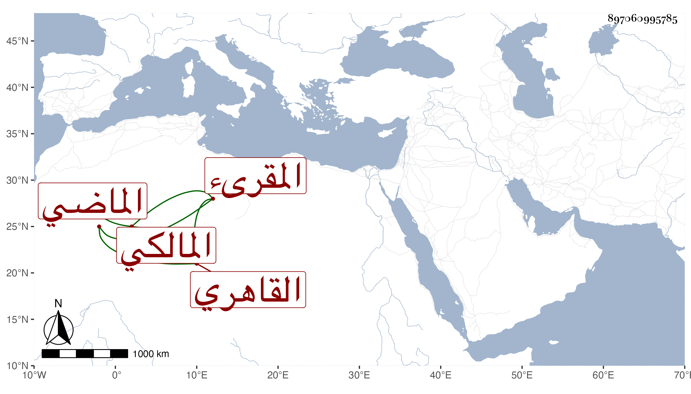

0902Sakhawi.DawLamic.ITO20230111-ara1.EIS1600.897060995785
Biography ID: 897060995785
679
عبد القادر بن إبراهيم بن علي محيي الدين بن البرهان القاهري المالكي المقرىء الماضي أبوه ويعرف كهو بابن الفوال . ممن اشتغل بالفقه والعربية قليلا وفهم ونسخ وقرأ مع أبيه في الجوق بل شاركه في إقراء الأبناء ، وتنزل في بعض التصوفات وربما قرأ على بعض المسندين بل أخذ عني يسيرا ولا بأس به .
